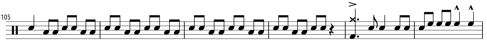

Transcription: “Early Summer” — Yoshinori Fukui with Ryo Fukui

Listen to the first 40 seconds of this:
What you’re hearing is a guy named Ryo Fukui (福居良). He began his life in music by playing the accordion (like all of us), and then at the age of 22 decided he wanted to be a jazz pianist. And after 6 years of self-taught instruction, he cut his first album, Scenery.
For some reason, Scenery has really gotten popular in the 21st century — It seems that sometime around 2016/2017, the album blew up on YouTube. Recently, articles have been written explaining how Scenery is one of the most important jazz albums to come out of Japan.
I’ve never really understood why some jazz stays obscure, while other stuff takes off (see: that version of Moanin’ recorded by the Mingus Big Band in 1993… you know, 14 years after Charles Mingus died). But whatever, I’m glad people like it, and it’s a fun album. I’m not even sure how I found it; I think I was watching something on YouTube about Eric Satie…
The drummer on this record is Yoshinori Fukui, a player I know nothing about. As far as I can tell, the only albums he’s on are this one, and Ryo’s ’77 follow up Mellow Dream. Intuition would suggest that he’s related to Ryo, and Wikipedia says they’re brothers, but I’ve never been able to find a source explicitly stating this. I’m not even sure what the dude looks like — the closest I can get to a photo is from the vinyl jacket:

Scenery wasn’t well known outside Japan, as it’s very old-school compared to what was hip in the US at the time (not to mention how America jazz in the 70’s was becoming increasing bloated and aimless). Out of the 6 songs on Scenery, 4 are enjoyable takes on jazz standards, while there are two that are quite unique: the title track, which is an original composition by Ryo that closes the album; and “Early Summer”, written by Hideo Ichikawa — another musician I can’t find much info on.
Hideo appears to be a piano player, and he has a Discogs page listing credits on several obscure albums. Meanwhile, AllMusic reports that he actually cut come records with guys like Joe Henderson and Jack DeJohnette. You can punch “Hideo Ichikawa” into Spotify and Apple Music to find a couple of jazz albums from an artist of the same name; no idea if it’s the same Hideo. For fun, here’s Hideo apparently playing a version of “Early Summer” on YouTube that sounds nothing like Ryo’s performance; it’s anyone’s guess as to what extent the tunes are actually related.
Ryo has 5 albums out there, but only Scenery and Mellow Dream are widely available. When you start to dig into these players, you start to go down a rabbit hole of increasingly mysterious albums. Apparently Japanese Jazz or “J-Jazz” is it’s own thing; Ryo makes the cut on an Apple Music playlist.
Anyway, back to “Early Summer”. The number starts off as a slow jazz-rock piece, before the tempo quadruples and the song blasts off into some very fast swing, at the 3:44 mark. I clocked the swing section with a half note that floats between 170 and 180; I’ll say an average of 350 (!) beats per minute.
That’s definitely cooking, and Yoshinori does a great job of laying it down. You can hear him keep up the swing pattern for much of the fast section, something that most drummers tend to avoid once you start pushing past the 300 mark, let alone 350 (related: a great video by Tommy Igoe on how to play fast jazz, i.e. 350+). For the most part, it sounds like the bass player just sticks to the half notes.
At the 6:47 mark, Yoshinori begins an extended drum solo, the focus of this post. I discovered Ryo around July of 2019, and I’ve been hacking away at this solo for a hot sec. I’ve finally wrapped it up, just in time for summer to officially end this upcoming Thursday. Sorry I missed last Sunday; hopefully this makes up for it.
It’s funny picking apart a drummer when you don’t really know much about them, and there’s just not a lot of recorded material out there to get me up to speed with Yoshinori’s style. This project is more of a curiosity than anything else. I got motivated to do this because it’s from a pretty popular artist and it doesn’t look like anybody tackled this solo yet.
To be sure, Yoshinori does have some cool moves. There’s a fun bit of off-beat trickery, like this cool motif that has each phrase ending right before the downbeat, starting at the fortissimo marking:
He uses the same idea with the doubles seen here:
Most drummers would play the snare on the off-beat, but Yoshinori flips it around.
He goes pretty hard with the dynamics; dynamics are a fine line, since they can get gimmicky quickly (see: The Doors), but Yoshinori keeps it tasteful. He also seems to to have the hots on for flams, although I don’t hear any drags (FYI: a lot of the flams sound like they’re played dead — buzzed by burying the sticks into the head). It appears like the hi-hat pedal kind of does what it wants.
The solo has a pretty good structure, with it starting and ending with the same motif, as well as a fun climax at 8:10 and a pretty exciting finale.
In fact it’s quite fascinating to take a look at a non-American drummer’s approach to jazz; maybe you’d even call it an etic approach. But truth be told, I’m in a bit of the same position, being a white dude and all that. I take pride in the fact the jazz is one of only a few truly American art forms, but I’ve wondered what my exact relationship with jazz should be.
About two and a half years ago, modern jazz hero Wynton Marsalis had a discussion about jazz and race where he shared some of his insights:
... Now the drums, while rooted in Africa, are Afro-American, which is American. To be Afro-American is also to be part Anglo-American. That is at the root of many of the problems related to race in America. It’s hard for us to come to grips with that notion. We have been conditioned into making a false binary choice, an either/or, when life isn’t that cut and dried. Oftentimes it’s both/and. But it’s hard for us to reconcile that both/and when we are so used to having to choose sides.
I find it curious that there’s not a tremendous amount of discussion regarding this, at least among mainstream musicians. Maybe it’s for the best — in years past, Marsalis seemed a bit annoyed by the topic, perhaps finding it unproductive. I found this snippet from a Washington Post story that the newspaper ran back in 1994:
... Jazz critics are more concerned with race than with music … Beethoven was Beethoven. He wasn't the German. Whereas with jazz, you talk right away about the musician's neighborhood and his attitude toward race. Well, that's not going to go anywhere. We are tied to each other and we have to try to deal with each other. Believe me, the Caucasian and the American Negro are forever wed.
I suppose it’s best to at least be mindful of the realities regarding jazz in America. But hey, ignoring all of that will win you an Oscar, so what difference does it make?
One final thing I have to mention is this gem I found on a video of “Early Summer”:

Oh yeah, that's a good ctach alright. Boy, don’t get me started... you know what, let's go back to the Tommy Igoe video:


Ah, much better!
BTW, while I've shown you sheet music that has a half note pulse, I actually transcribed it in half time, with a quarter note pulse. Lucky for me, MuseScore lets you copy rhythms and paste them in half time or double time, so MuseScore pretty much did all the extra work for me. I get that reading "cut-time" rhythms at such a fast tempo can be challenging, so I'll include both versions for you.
“Early Summer” on Spotify and Apple Music.
Posted on September 20, 2020
Tags: 2020 • Transcriptions • Yoshinori Fukui • Ryo Fukui